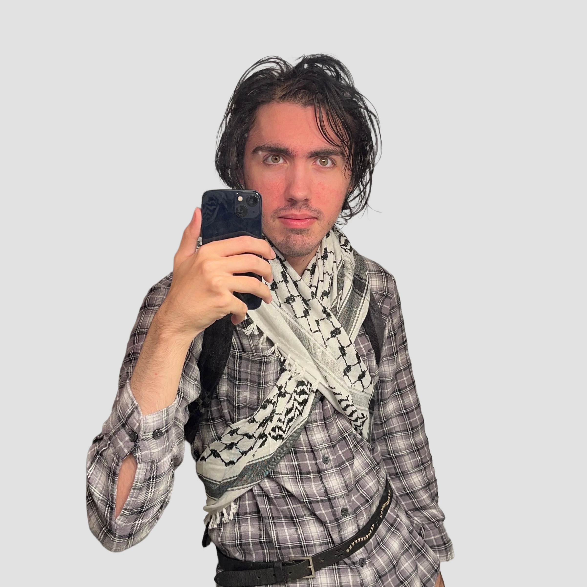

Xalsier's profile on Social Media.")
Xalsier
American artist and writer
Featured Art


Profile
Born
February 1, 2003, Boca Raton, Florida
✨
Age
22 years
✨
Height
6'0"
✨
Occupation
Artist and writer
✨
Appearances

Frequently Asked Questions
How do you pronounce Xalsier?
Xalsier is pronounced similarly to the latin motto 'Excelsior', with the addition of an 'A'. It can also be pronounced starting with a 'Z' (ie Zal, Zalsier, ザルシア (Zarushia)). The name is often confused with Xavier.
What is the origin behind Xalsier's name?
The name Xalsier is a combination of X with an anagram of the word 'Asriel'. When creating the name, he drew inspiration from the video games Undertale and Deltarune.
Is Xalsier a furry artist?
Xalsier has been active in the furry fandom as an artist since 2022. His introduction to the community primarily came from Warrior Cats, Undertale, and FNAF in his early childhood.
What is Xalsier's ethnicity?
He is Hispanic. His father is from New York, and his mother is Colombian with family in Bolivia.